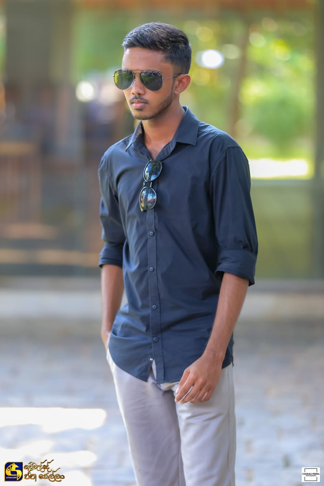

I'm Diuth Induwara, a developer and creative professional bridging the logic of code with the rhythm of art.
Trained in Full-Stack Development and Aesthetics (UoVPA)

Core Software Structure:
Completed the NVQ Level 4 Software Development Course (VTA).
Full-Stack Expertise: Gained 6 months of intensive, hands-on web development training at ACCIMT.
I am actively seeking professional opportunities to apply this unique blend of skills and vision.
- Stack Used:
- Laravel, JavaScript, PHP, MySQL, SCSS
- Source Code:
-
GitHub Repository Link
Key Languages & Frameworks
My technical foundation spans across environments, allowing me to build robust full-stack applications and interactive user interfaces.
Languages: I work proficiently with PHP, JavaScript, Python, and Java.
Frameworks: My primary full-stack framework is Laravel (PHP).
Tools: I rely on Git and GitHub for version control and collaborative development.